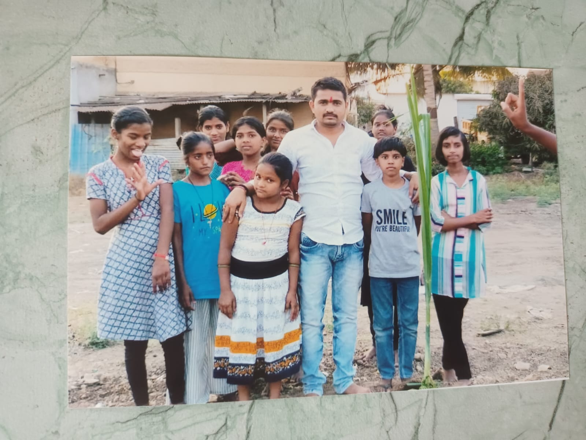
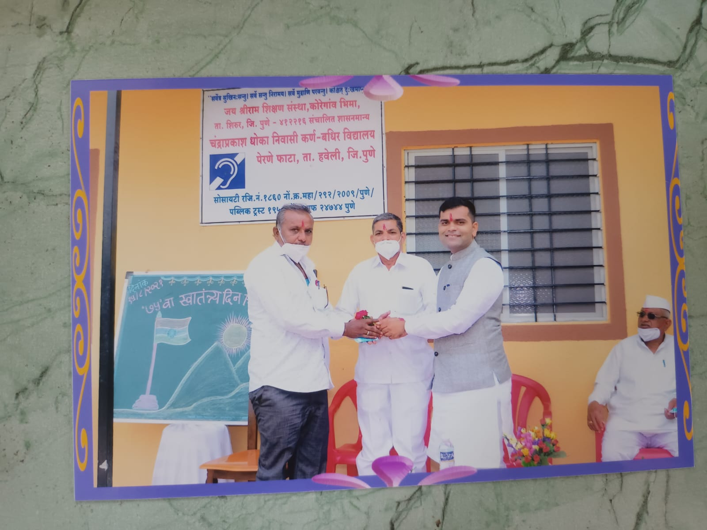
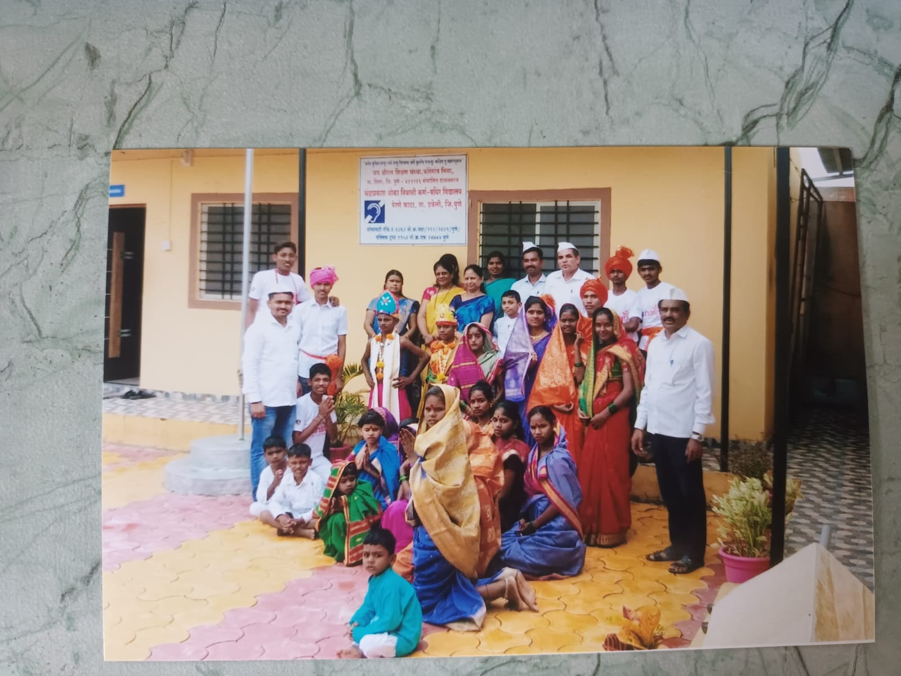
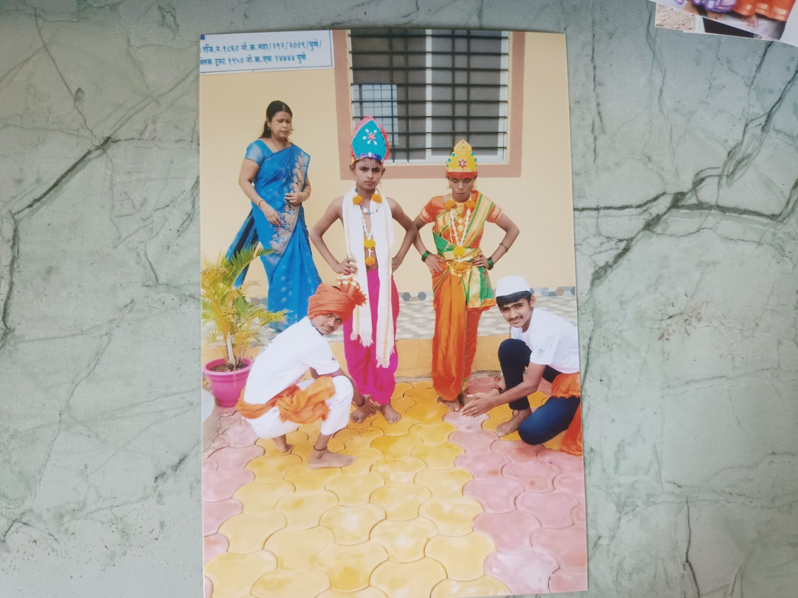
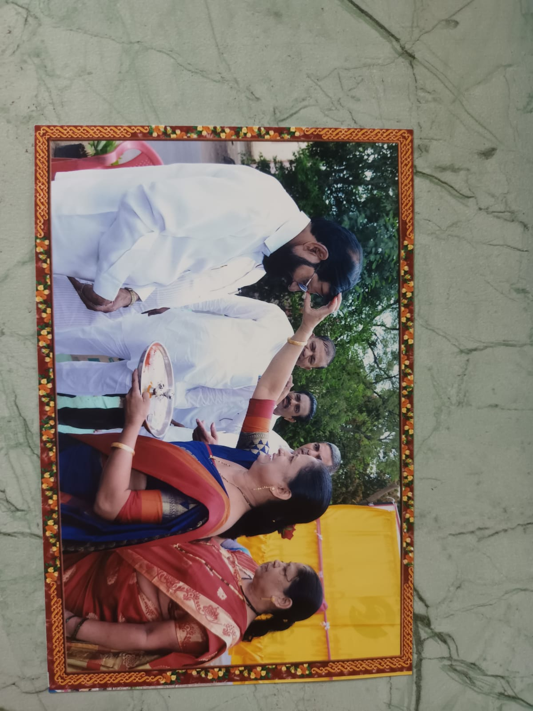

लक्ष्य
सकाळी फिरायला जातो ते महात्मा सोसायटीजवळ असलेल्या डीपी रोडपर्यंत. तिथे रस्त्यावर दामलेकाकांची एक मोफत व ओपन लायब्ररी आहे. लोक पुस्तके नेतात व आणतात. अनेकांनी पुस्तके भेटही दिली आहेत. काही जण उपक्रमासाठी स्वयंसेवक म्हणूनही मदत करतात. दामले काका जगन्मित्र व नर्मदा परिक्रमा केलेले. त्यामुळे ग्रंथालायचे नाव ही नर्मदे हर! मी थोडावेळ गप्पा मारायचो.
छायाचित्र
   प्रकल्प
सकाळी फिरायला जातो ते महात्मा सोसायटीजवळ असलेल्या डीपी रोडपर्यंत. तिथे रस्त्यावर दामलेकाकांची एक मोफत व ओपन लायब्ररी आहे. लोक पुस्तके नेतात व आणतात. अनेकांनी पुस्तके भेटही दिली आहेत. काही जण उपक्रमासाठी स्वयंसेवक म्हणूनही मदत करतात. दामले काका जगन्मित्र व नर्मदा परिक्रमा केलेले. त्यामुळे ग्रंथालायचे नाव ही नर्मदे हर! मी थोडावेळ गप्पा मारायचो.
नोंदणी तपशील
मुख्य कार्यकारी : सुभाष गोपालसा कट्यारमल
सचिव : पद्म सुभाष कट्यारमल
खजिनदार : मंगला कमलाकर शिंदे
देणगी
महत्वाचे योगदान
Supported By GPay,BHIM,PhonePay,AmazonPay